IF-THEN-ELSE
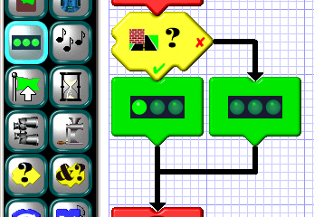 Conditional tiles are used to create a fork in the road of your program's execution. Depending on the outcome of the chosen condition, your program may continue in one of two different directions. The simplest conditional is the IF-THEN-ELSE tile shown at the left. This tile checks for the presence of an obstruction on the left and none on the right. If this condition is met the path indicated by the green check mark is taken. If not, the path indicated by the red "X" is taken. So, overall, what this particular program does is turn the left LED on if there's a left obstruction and not a right one, and turns it off otherwise.The remaining button is used to switch the TRUE and FALSE directions, as the example illustrates. Notice that the reversed directions are highlighted in black to make them more obvious in your program.
When a conditional is placed, it creates several locations where additional tiles may be inserted. One is immediately to the bottom of the tile and is normally the program fork corresponding to a TRUE condition. In the example, though, we've reversed TRUE and FALSE, so here it's the path taken by the FALSE condition. Another insertion point is the arrow to the right of the tile. This is normally the path taken by the FALSE condition. But again, since we've reversed TRUE and FALSE, it's the other way around. A third insertion point is the arrow below the conditional tile. This occurs where the forking program paths rejoin. A tile place here will execute regardless of whether the condition was TRUE or FALSE.
ELSE-IF
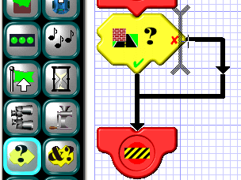 There is yet another insertion point available only if you happen to be inserting another condional tile. It's just to the right of the conditional tile and is indicated by a vertical cursor.AND-IF
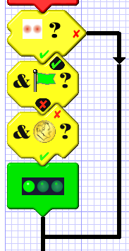 If you need to further restrict a condition with an additional condition, use the AND-IF tile. It can only be inserted below another conditional or AND-IF tile, as shown to the left. In this example, the left LED is turned on if the line sensor doesn't see a black line AND IF the green flag is NOT up (note the inverted logic here) AND IF the last coin flip came up "heads". All three conditions have to be TRUE for the entire conditional to be TRUE; otherwise the entire conditional is deemed FALSE, and the alternate path is taken.Flag Condition
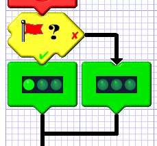 Seven different flags can be raised or lowered with the flag action tile. The flag conditional can check any of these flags to see if they're up or not. In the example to the left, the left LED will reflect the condition of the red flag: on if it's up; off if it's down.Line Sensor Condition
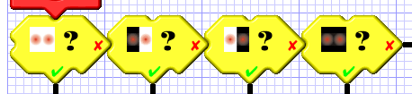 The line sensor uses two optical detectors on the bottom of the Scribbler to detect the presence of dark or light marks on its rolling surface. It is used primarily for line-following, wherein a black line is created with tape or computer printouts and the Scribbler is programmed to follow it. There are four possible states that the line sensor can have: no black line visible, black line visible only on the left, black line visible only on the right, and black line visible on the left and right. The conditional tiles in the example to the left illustrate these four conditions. Note: When there are four mutually exclusive conditions such as these, it is not necessary to include a conditional tile for the fourth condition, since it is the default if the other conditions are false. It is only included here to show what it looks like.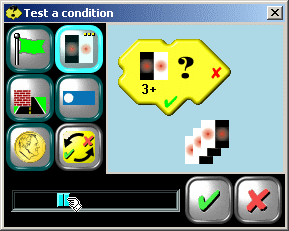 You can further restrict the line sensor conditional by requiring a certain number (up to 8) of consecutive observations before the condition is deemed TRUE. This is done using the slider at the bottom of the edit box. In the example to the left, a dark line will have to have been observed on the left side only at least three times in a row for the condition to be TRUE.
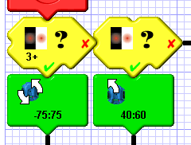 If you use the same condition more than once in an ELSE-IF arrangement, but with different numbers of consecutive observations required, be sure to put the most restrictive condition first, as shown at the left. If these two tiles had been switched, the tile requiring only a single observation would still be true even if three consecutive observations had been made. Because conditions are checked in sequence, it would register TRUE first, so you'd never get to check the more restrictive condition.
Barcode Sensor Condition
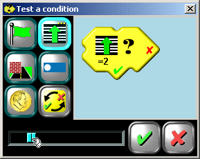 The line sensor can also be used to read barcodes strewn in the Scribbler's path. It can identify seven different barcodes, available in this pdf file. (You will need Acrobat Reader to view and print it out.) These barcodes can be recognized only going forward, only going backward, or going either way. In the example to the left, the condition will be TRUE if barcode #2 was passed over in the forward direction (i.e. bottom-to-top). Which direction to identify is selected by clicking on the line sensor multiple-choice button. Which barcode to recognize is selected with the slider. (Note: The terms "forward" and "reverse" refer to the direction the Scribbler is moving relative to the barcode, not the direction the Scribbler's wheels are turning.)In practice, when the barcode detector is read, it will return immediately if either line sensor doesn't see black. If the sensor happens to be over one of the heavy black bars when it's read, it will go into a loop looking for a white bar and then a valid barcode. Therefore the sensor must be checked often enough to catch it on a heavy black bar as it crosses over one of them. Otherwise it may miss the barcode entirely. The Scribbler may also miss a barcode if it's traveling too fast or too slowly or if it crosses the barcode at too oblique an angle.
You can use the barcodes to create virtual mazes on any flat surface. Each different barcode can tell the Scribbler what kind of intersection it has reached and what its options for turning are.
Do not use the barcode function of the line sensor at the same time you use its line sensing function. Both of these functions share the same memory in the Scribbler and can become confused if they're both used at the same time. Reading the line sensor changes what the barcode detector says it saw, and vice-versa.
Obstacle Sensor Condition
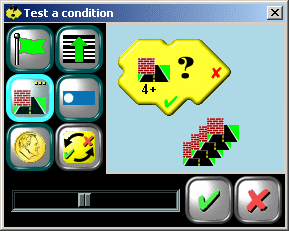 The obstacle sensor uses the two infrared LEDs on the left- and right-front of the Scribbler, along with the IR detector in the middle-front to detect light reflected from obstacles in its path. As with the line sensor, each of the four possible combinations of left and right obstacles represents a separate condition. And, as with the line sensor, you can also restrict how many consecutive times the condition must be observed for it to be TRUE. In the example to the left, the condition of "left obstacle present and right obstacle absent" must hold for four or more successive observations for the condition to be TRUE.Crash (Stall) Condition
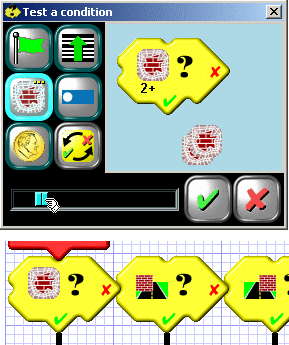 The stall sensor detects when the Scribbler's wheels are being driven but not turning. This happens when the Scribbler runs into an obstacle or otherwise gets stuck. As with some of the other sensors, you can restrict the stall sensor by how many times in a row it has to be detected for the condition to be true. Usually, though, a single instance is enough to know that something is wrong and needs to be corrected. The stall condition is one of the choices on the obstacle sensor multiple-choice button. If used in conjuction with the obstacle sensor, the stall sensor should always be tested first. This is because, if the Scribbler has run into something and stalled, the obstacle sensors are probably seeing things too. If you were to check them first, the stall sensor might never be checked. The example at the left shows the proper order.Light Sensor Condition
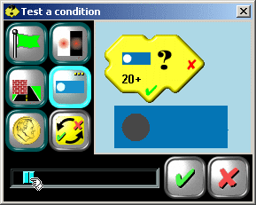 The light sensor consists of three photocells mounted behind holes in the Scribbler's front end. The brighter the light shining on any given sensor, the higher the number it will return. These numbers can be compared with each other or with constant values in various combinations to achieve TRUE/FALSE conditions.There are twelve different conditions that can be checked, in four categories:
1. Sensor value (left, center, or right) is at least x.
2. Sensor (left, center, or right) is the brightest of the three by at least x.
3. Sensor (left, center, or right) is the dimmest of the three by at least x.
4. The (average, maximum, or minimum) sensor value is at least x.
The value of "x" can range from 1 to 255 and is adjusted using the slider. As you move the slider, the graphic in the box illustrates the condition being checked. In the example, the lefthand light sensor must return a value of at least 20 for the condition to be TRUE.
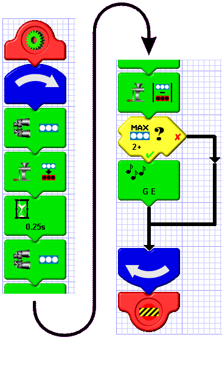 The light sensor can be used in conjuction with the computation tiles to form, for example, a simple motion detector, as shown at the left. This program works as follows:
1. The light sensors are read once.
2. The values read are copied to the reference values.
3. The program pauses for 1/4 second.
4. The light sensors are read again.
5. The absolute value of the difference between the new values and reference values is computed.
6. If the highest of the three differences is at least 2, a sound is produced.
If you were to program this example into your Scribbler and set it on a table, it would make a sound everytime someone walked past it.
Coin Came Up "Heads"
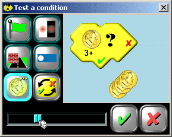 This condition enables you to add some randomness to your programs. This is useful when your Scribbler gets stuck in a corner, for example, and you need to vary the techniques required to free it. It can also be used to vary the sounds played under a given set of circumstances. For this condition to be TRUE the coin flip has to have come up "heads". You can require that anywhere from 1 to 8 consecutive coinflips has to yield "heads" for the condition to be TRUE. This is done with the slider control. Doing so varies the probability of the result being TRUE by cutting it in half with each successive increment in the required number of consecutive "heads". The probability for one "heads" is 1/2; for two, 1/4; for three, 1/8; etc.Reset Button Was Pressed
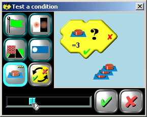 This condition checks to see if the reset button has been pressed (or the power switch newly turned on). Pressing the reset button restarts your program. So this condition can never be TRUE except as the first statement in your program. Anywhere else it will return FALSE. So what good is it? The answer is that it can also count how many times the reset button was pressed to begin your program and branch accordingly. This is very useful if you want your program to do two different things depending on how you start it. It's also useful if your program makes the Scribbler move right away, but you don't want that to happen when you first turn it on. With this conditional, you could make it wait until the reset button was pressed three times in rapid succession, as the example at the left indicates.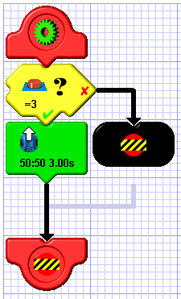 Here's how the reset condiitonal is used. This program makes the Scribbler move forward for three seconds, but only if the reset button is pressed three times in rapid succession. Otherwise, it does nothing, taking a quick exit. And remember, it only works as the first statement in your program. The reset condition is FALSE everywhere else.